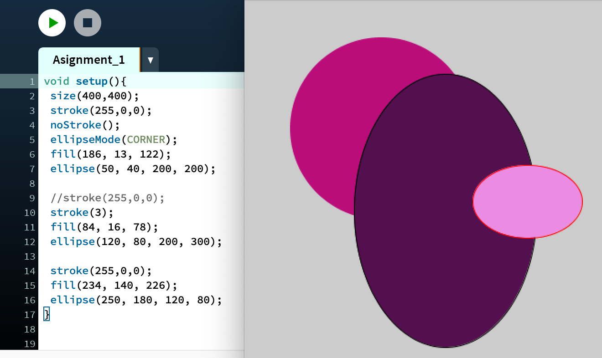
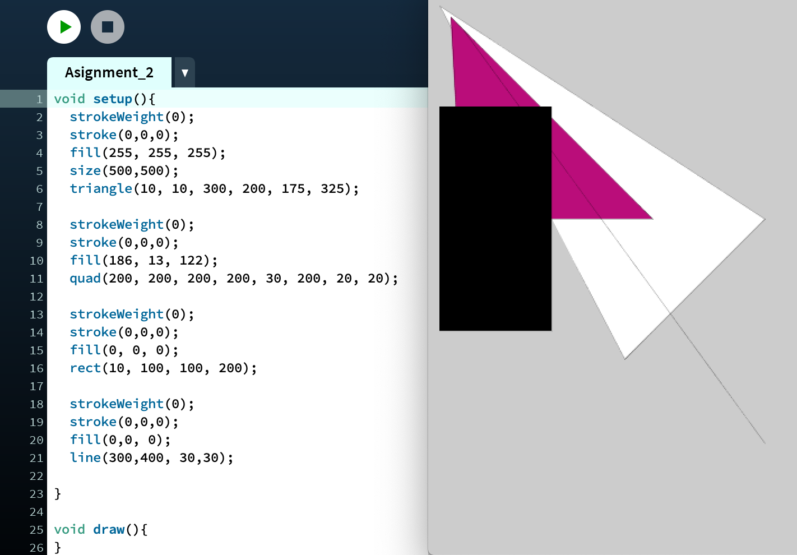
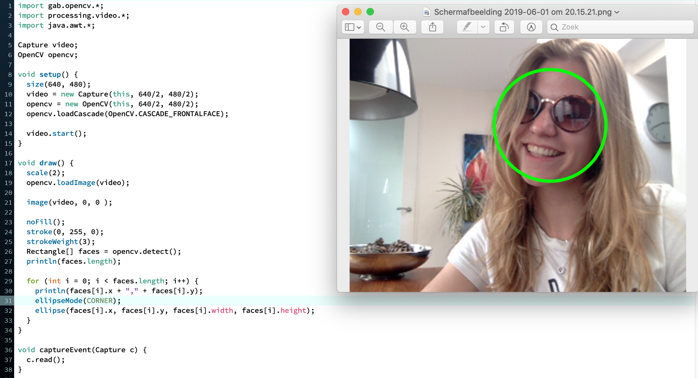
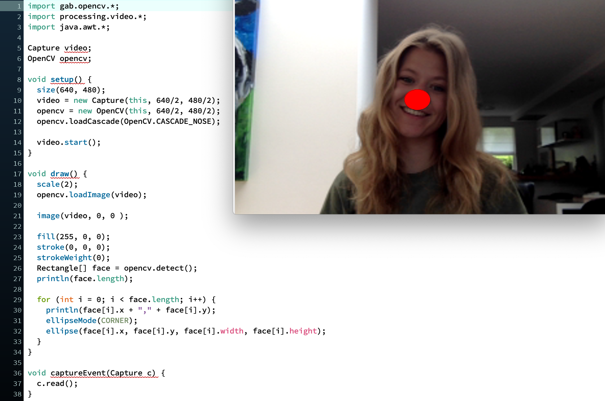
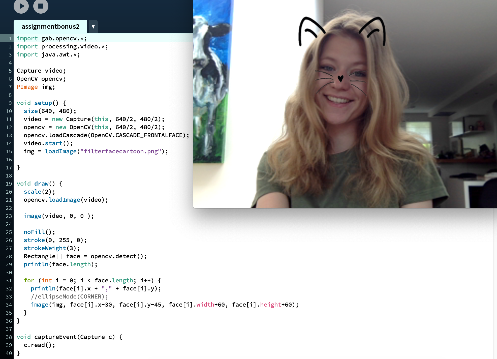
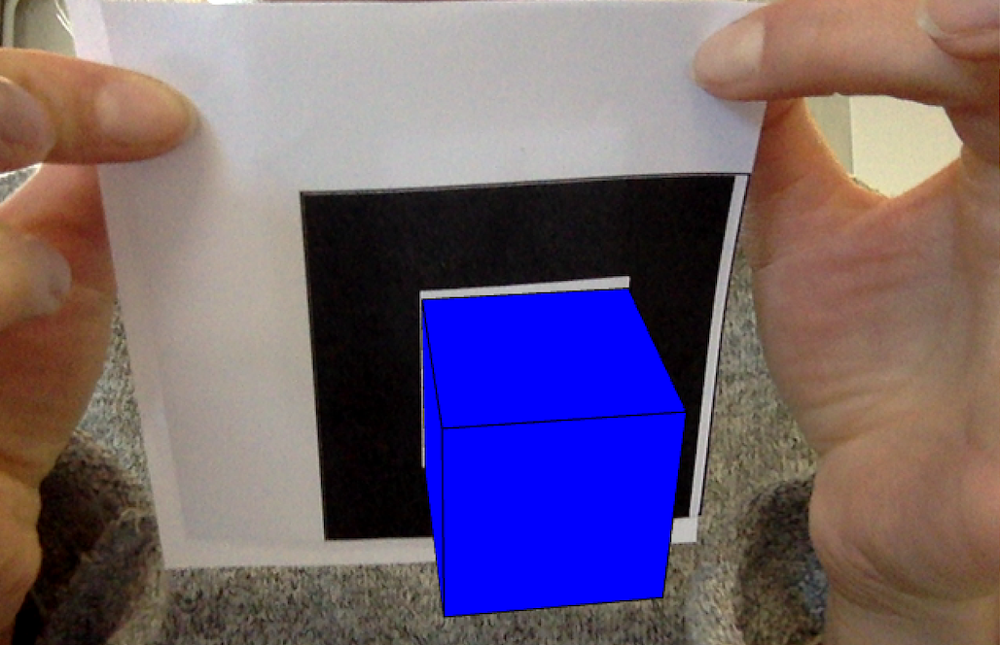

Ik heb de workshop Computer Vision gevolgd. Tijdens deze workshop ben ik beter bekend geraakt met het programma Processing. Hierin heb ik verschillende visualisaties en interacties gemaakt.
In deze opdracht moest ik drie figuren maken die elk een andere locatie hadden, verschillende kleuren bevatten, verschillende breedtes en hoogtes betroffen, en sommigen wel en geen border betroffen. Dit moest met het programma processing gemaakt worden. Ik heb gebruik gemaakt van een void setup functie om dit in werking te brengen.
In deze opdracht moest ik een code schrijven waarin er minstens vier verschillende figuren te zien waren. Elk figuur moest een eigen kleur en een een eigen locatie hebben. Ik heb deze code ook in processing gemaakt. Om deze figuren tot uiting te brengen, moest ik hier ook gebruik mak n van een void setup functie.
In deze opdracht moesten minstens 2 verschillende vormen gemaakt worden met verschillende kleuren. Ook moest het interactief worden gemaakt. Ik heb ervoor gekozen om in een rondje een vierkantje te plaatsen. De kleuren verschillen zodanig van elkaar dat er een goed onderscheid kan worden gemaakt tussen de verschillende figuren. Het interactieve component aan mijn figuren, bevat het vermenigvuldigen van de figuren aan de hand van waar de muis langs beweegt. Overal waar je de muis langs beweegt, daar zullen de figuren een spoor achter laten. Ik vond dit een leuk idee omdat je scherm zo steeds meer gevuld raakt met de figuren.
In deze opdracht was het de bedoeling om met de webcam te werken. De opdracht was om van het vierkantje om het hoofd een cirkel te maken. Ik heb hiervoor het attribuut "ellipse" gebruikt.
In deze opdracht was het de bedoeling dat er een rode neus op elk persoon kwam die in beeld verscheen. Hiervoor heb ik de code aan moeten passen. De opencv.loadCascade moest aangepast worden naar het herkennen van de neus. Vervolgens moest de fill rood worden, zodat het rondje dat om de neus kwam te staan, rood werd. Om deze opdracht helemaal te laten slagen is er een void setup gebruikt, void draw en een void captureEvent.
Dit was een bonus opdracht. Ik moest ervoor zorgen dat er iets creatiefs gebeurde. Er moest een afbeelding op een bepaalde plek in beeld komen op je gezicht. Ik heb ervoor gekozen om een filter met een bril over mijn gezicht te laten komen. Ik vond dit een leuke toepassing, omdat het zo wat weg heeft van een SnapChat filter.
In deze opdracht moest je zelf iets creatiefs bouwen. Om inspiratie op te doen, kon worden gekeken naar voorbeelden. Ik heb gebruik gemaakt van de "OpenCVMultipleColorTrackingLiveCam". Hiermee kan je op de knoppen 1, 2, 3 en vier drukken. Als je vervolgens op het scherm klikt dan verschijnt er een klein scherm in het zwart-wit op de plek van welk cijfer je indrukt. Ook komen er verschillende rode vierkantjes in beeld.
In deze opdracht moesten we ervoor zorgen dat bepaalde markeringen/vlakken werden herkend. Vervolgens werd hier een blauw blok op geplaatst. Om dit te kunnen doen moest NyARToolkit gedownload en geïnstalleerd worden. We hadden twee blaadjes gekregen met vlakken erop. Het blauwe vlak werd ook een 3D vlak.
